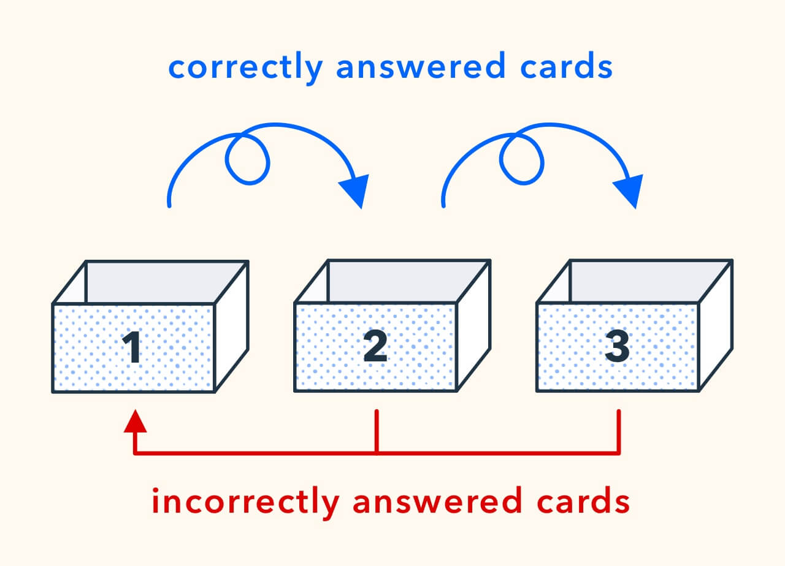

Leitner Box Application in Python
I need to improve my way of learning!!!
Between classes, revisions, work and everything else,
I felt I wasn't being very efficient.
It was in this context that I came across a video by ScienceEtonnante talking about the Leitner box. It completely convinced me: This optimized learning method is based on real scientific principles!
So... What is a Leitner box?:

Sebastian Leitner, a German science journalist, invented this system in 1972. The principle is brilliant in its simplicity: we use several boxes (or compartments) to classify our revision cards according to our level of mastery.
The more we master a card, the more it goes into a "higher" box, and the less often we revise it. If we make a mistake, it goes back down to the first box to be revised more frequently.

From what we know today about how the brain works, it's one of the best ways to learn!
Spaced repetition perfectly exploits our Ebbinghaus forgetting curve.
Application Development
Python Architecture
I developed the application in Python with Tkinter for the graphical interface.
Python for development simplicity, Tkinter because it's included
by default and it does the job without complications.

Main Features
What the app does
- Card management: creation, modification, deletion of question-answer pairs
- Box system: 15 mastery levels with increasing revision intervals
- Revision algorithm: automatic card presentation according to their schedule
- Statistics: progress tracking and success rate by box
- Saving: data persistence between sessions
Application Demonstration
The biggest challenge was managing time intervals correctly. How to know which cards to present to the user at a given time?
I implemented a timestamp system that automatically calculates when
each card should be revised according to its current box:
- Box 1: now
- Box 2: in 1 minute
- Box 3: in 2 minutes
- Box 4: in 4 minutes
- Box 5: in 8 minutes
- Box 6: in 15 minutes
- Box 7: in 30 minutes
- Box 8: in 1 hour
- Box 9: in 2 hours
- Box 10: in 4 hours
- Box 11: in 8 hours
- Box 12: in 16 hours
- Box 13: in 1 day
- Box 14: in 2 days
- Box 15: acquired

Here is an example of a question to revise:

Summary and Perspectives
This project made me discover that programming is also about solving your own problems. I had a concrete need (learn better), I found a method, and I created the tool to apply it!
Beyond the technical aspect, this project mainly allowed me to transform my way of studying. The more I use the app, the less work I have, because well-mastered knowledge naturally rises to higher boxes.
Concrete proof of the effectiveness of this method? Thanks to this application, I was able to revise my last course of the year optimally and I got a great grade! The spaced repetition system really proved itself.

Possible improvements
- Cloud synchronization to use the app on multiple devices
- Mobile version to revise during transportation